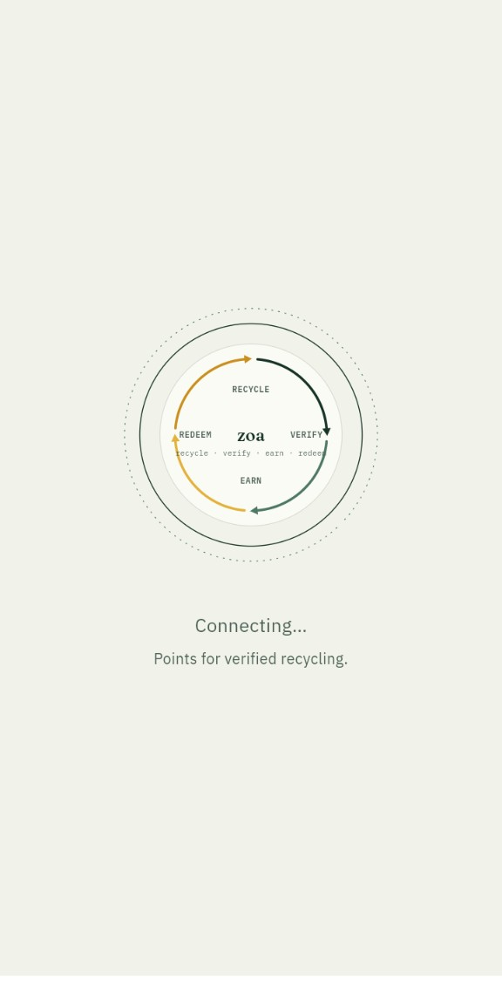
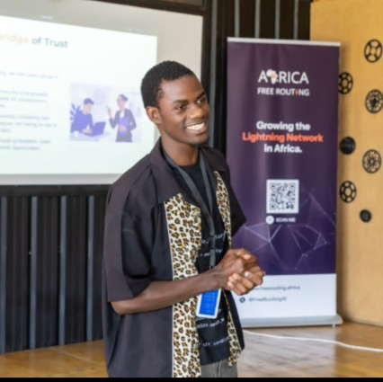

Backend Developer · Quality Assurance
Juma Tonny
A Go backend developer based in Kisumu, Kenya.
About

I'm Juma Tonny Oyando, a Go backend developer based in Kisumu, Kenya, on the shores of Lake Victoria. I'm currently an apprentice at Zone01 Kisumu, where I learn by building real software and solving hard problems with peers.
I build backends in Go with Gin, GORM and PostgreSQL. I organize them using clean architecture (handlers, services, repositories) so they stay testable and easy to maintain. On the frontend I keep things simple with vanilla HTML, CSS and JavaScript, and I package and ship everything with Docker.
My background is a little different from most developers'. I hold a Diploma in Supply Chain Management, which taught me to think in systems, processes and efficiency. I now apply that mindset to software. I'm also growing my interest in quality assurance, and I care about building software that is secure as well as functional.
I'm open to full-time roles and freelance projects. If you need a reliable Go developer who cares about clean code and real-world impact, let's talk.
Skills
Projects
Contact
I'm open to full-time roles and freelance projects. If you need a reliable Go developer who cares about clean code and real-world impact, let's talk.
jumatonny490@gmail.com